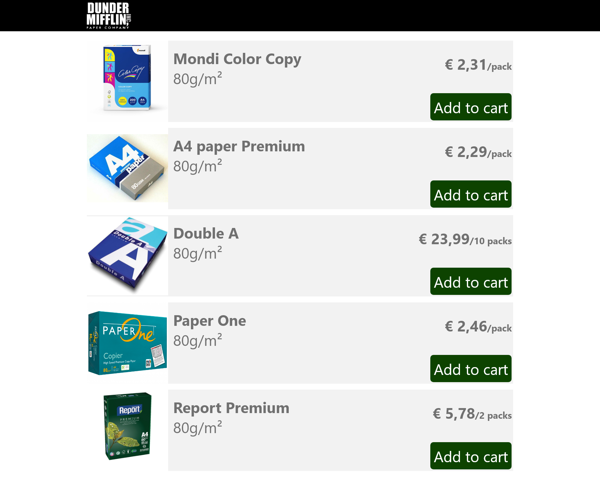

Introduction
During weeks 5 and 6 we worked on A/B Testing. We had to decide on a topic and hypothesis to be tested on this topic. The tests were conducted during week 6 on prototypes that were created on week 5. The tests were recorded and analyzed to evaluate whether the hypothesis was plausible.
Test Set-up
Topic: Banner conversion rates.
Hypothesis: Will a CTA banner increase the sale of a worse deal?
Test: A/B Testing.
Variable: One prototype will have a simple product list with prices. The other will have a banner placed before the products on a page.
Test Plan: I will present the users with the prototype screen and brief them on the following situation: "You are an office supplies manager at a law firm. The paper supply at the company is running low and you were tasked to buy 100
packs of A4 paper. Make sure you buy 100 packs of the best deal available on the website."
The users will have, theoretically, unlimited time to perform the task. No factor other than the testing variable should influence them on their choice.
Prototypes
| Prototype A | Prototype B | |
|---|---|---|
| Screenshot |  | |
| Variable | Banner on top. |
No banner is displayed. |
The Test
I tested the design with 7 different people. They all understood what was supposed to be done, but the results were somewhat mixed. 4 participants ended up choosing the A4 paper premium, as it did have the best deal (€ 2,29 per pack) 3 participants, to my surprise, chose the “special deal”, where the packs were actually more expensive than most other packs (€ 2,49 per pack).
I didn’t record the screen due to some problems on my computer, but I did write down all the outcomes and time taken.
| Participant | Outcome | Time |
|---|---|---|
| Celine | Best deal | 29s |
| Julie | Best deal | 18s |
| Nayong | Special deal | 12s |
| Alex | Best deal | 26s |
| David | Special deal | 16s |
| Miguel | Special deal | 14s |
| Shaunak | Best deal | 17s |
Result Analysis
It surprised me that some participants actually ended up clicking the “special deal”, seeing that it didn’t provide the best price and they had a clear instruction of picking the cheapest option.
It seems there is little relation between outcome and time taken, but participants that took less usually picked the special deal instead of the best one, maybe because they did no calculations.
The results of the test could be biased because there is no real life outcome for whatever they do. I feel like if this was a real purchase for a company they worked for they would have studied the prices a bit better and realized the “SPECIAL DEAL” was just an expensive paper on sale, and not actually the cheaper paper.
END OF ENTRY